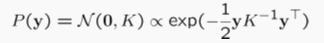

- 最近、ランク最小化ものに少しはまっていたので、ちょっとだけまとめ。
- ある学習問題を考えたときに、求めるべきパラメータが行列の形をしていることがある。
たとえば、
- 入力が行列Xであるような予測器 f(X) = <W, X> を学習したかったり、
- 行列Xに観測できる部分とそうでない部分があって、この行列の分解 W=UV を考えることによって穴埋めをしたかったり、
- そこで、当然のことながら、行列パラメータに対して、なんらかの制約を課する、つまり、正則化を行ったり、事前分布を考えるということを思いつく。
- まず思いつくのは、フロベニウスノルム（行列の要素の二乗和）を使うということだろう。
- しかしこれは、行列を延ばしてベクトルにしたものの2乗ノルムを考えているのとおなじだから、「行列ならでは」という感じではない。
- まず思いつくのは、フロベニウスノルム（行列の要素の二乗和）を使うということだろう。
- パラメータが行列であることを意識すると、「行列のランク」を正則化に使うというのは、非常に自然な考え方だろう。
- 一般に行列のランクというのは、行列のある意味での自由度を定義していることで、これを抑えるというのはなかなかリーズナブルな考え方である。
- しかし、ここで問題が発生する。 行列のランクというのは凸関数ではないのである。
従って、行列のランクと同じように振舞う、凸関数があるといいだろうなあ、という話になってくる。
- 最近、機械学習でも、行列のランク（を間接的に小さくする凸関数）を正則化に使おうという考え方が流行しているようだ。 いくつか挙げると、 などがある。
- これらの元を、（ほんのちょっとだけ）辿ると、どうやらFazelの一連の研究（"Convex
Optimization"のBoydの弟子）にたどり着く。
- 彼女の書き物のなかではこのチュートリアル資料が非常に良くまとまっていて読みやすい。
- 解決策としては、アイディアは、（凸でない）ランクのかわりに、（凸である）行列のトレースを使う。
- 半正定値行列のトレースは、固有値の絶対値の和（つまり、固有値をベクトルと見た場合のL1ノルムに相当する）であるから、これを正則化項として小さくすることは、多くの固有値が0になり、結果的に、行列のランクが下がるのである。
- つまり、もともと最小化したかった目的関数は 損失関数L(W) + 正則化項 rank(W) だったのが、これを、 損失関数L(W) + 正則化項 Tr(W) で置き換えようというのである。
- なお、半正定でない場合（2つの半正定値行列の差として表現し、それぞれのトレースを最小化する）や、対称でない場合、正方でない場合（semi-definite embeddingというテクニックを使って、（行列は大きくなるけど）対称行列にもっていく）も扱うことができる。
- 適当な損失関数を使えば、最適化問題としては、半正定値計画問題（SDP）などになる。
- なお、半正定の制約というのは大きい問題では結構きつい。 従って、大きい問題では、固有値のL1ノルムを丸くして微分可能にしたり、凸になるのを諦めて適当に解いたりする。
- 対称行列の場合には、diagonal dominance theorem （各行の対角成分が、その行の（対角以外の成分の）L1ノルムより大きいならば、半正定）
を使って、線形制約にする方法もある。
- ただし、逆は成立しないので、これは緩い。 例えば、対称でない場合には、前述のsemi-definite embedding で対角化してから用いると、結局L1ノルムと同じになってしまう。
- 半正定値行列のトレースは、固有値の絶対値の和（つまり、固有値をベクトルと見た場合のL1ノルムに相当する）であるから、これを正則化項として小さくすることは、多くの固有値が0になり、結果的に、行列のランクが下がるのである。
- さらに、別の正則化項として log det(W) を使うことで、Tr(A) よりも、さらにランクが落とせるという話もある。（前述Fazelらによる）
- log det(W) は凸ではなく、凹なので、現在の解のまわりで線形近似ながら繰り返し解きなおす（最近、機械学習で使われているCCCP (Convex-Concave Procedure) と呼ばれている手法に同じ）ことで、局所解が求まる。
- ちなみに、この繰り返しの1ステップ目は、ちょうど Tr(A) を使った正則化に一致する。つまり、log det(W) を使うことで、Tr(W)よりもさらにランクを落とすことが期待できる。
- かしまが関わっている論文がPAKDDに１本、SDMに３本アクセプトされました。
- PAKDDのほうは、我々のお仕事寄り論文で、比戸さんファーストの、変化点分析の話。
- 我々のはlong paperでアクセプトされたのだが、「Only approximately 12% of the 312 submissions were accepted as long papers, 13.5% of them were accepted as regular papers, and 12% of them were accepted as short papers. 」とあるようにロングとレギュラー、ショートの３段階もあるらしい...。
- SDMのほうは、なんと３本も...。
- はい、今回も「創造力を刺激するあなたのパートナー」ないし「あ、そこ、○○したらいいんじゃない？」的な貢献です。 ありがたい！
- そのほかのTプラの皆様も含めると、PAKDD２本＋SDM７本の、たいへんな大漁になっております。 スゴイよみんな！
- 翻訳プロジェクトに仲間にいれていただいた「Pattern Recognition and Machine Learning」の日本語版、上下のうち上巻がそろそろ出るようです。
- この本は、僕もちゃんと全部読めてはいないですが、機械学習の勉強をするのには、現段階では恐らくベストの本ではないかと思います。
- 上下併せると結構高くなっちゃいますが、ちゃんとこの分野で働いている人たちがまじめに翻訳に取り組んだので、かなり信頼の置ける翻訳になっており、よくある「結局、原書読まないとわからん」ということはほとんどないと思います。
それなりにもとは取れるのではないでしょうか。
- 神嶌さんの怒涛の取りまとめっぷりによって全体感も保たれております。
- そして、監訳の大先生方も、ほんとにちゃんとチェックされているのです。
- コンテストの勝者プレゼンするために、ICDMにいってきました。
（あ、どうも）＞＜（ほれ）- ちなみに、label propagationでサクっといったように書いてるけど、それなりには苦労しました。
- コンテストのページで、データセットも公開されたようです。
- 会議全般
- 規模は若干縮小
- 今回のサブミッションは530（去年は900ちかくあった）と、KDDの573よりも少なかった。
参加者は300ちょっと、やはり減っている。
- まあ、去年は中国（香港）だったのに対し、今回はアメリカのど真ん中だからというのもあったのかも。
- 今回のサブミッションは530（去年は900ちかくあった）と、KDDの573よりも少なかった。
参加者は300ちょっと、やはり減っている。
- 仕組みは若干前進
- 今年から査読がダブルブラインドに。
- 分析によると、有力者を著者にいれたときの採択率が、一般のアクセプト率に近いところまで減ったらしい（！）
- つまり、以前は、一般人のみのチームよりも、偉い人を入れたチームのアクセプト率が高かったということ。
- なお、日本からのアクセプトは意外に多い、5/24=17%
- 分析によると、有力者を著者にいれたときの採択率が、一般のアクセプト率に近いところまで減ったらしい（！）
- 今回からワークショップのproceedingsをちゃんとアーカイブするようにしたとのこと、が、しかし、その弊害か、ワークショップにno showだらけ（本会議は、誰か1人は登録する義務あり）
- 今年から査読がダブルブラインドに。
- そのほか若干微妙
- バンケットは、ほとんどスポンサー（チェアの上司とか、動物園の園長とか...）のトーク、これが結婚式のスピーチのようで非常にだるい。 しかも、しゃべってると注意される...。
- が、遠足（動物園）はよかった。 全米ナンバーワン（？）の動物園らしい。 ほんとか。
- 規模は若干縮小
- 招待講演、チュートリアルには、ためになるものもあった。
- テンソル（高次元の行列、ていうか3次元）ものの招待講演チュートリアルは、結構面白かった。
- 例えば、SVDのテンソル版とかの話。
- 基本的には、2次元のSVDの繰り返しに帰着するような解法のようだ。 たぶん。
- アプリケーションは、たとえば、
- キーワードつきのHITS, PageRank。
- 有向グラフの行列表現で2次元、キーワードで1次元。 コレに対して3次元SVDをかます。
- 固有顔（顔画像の低次元近似表現、人と画像で2次元）に輝度の1次元を入れる。
- キーワードつきのHITS, PageRank。
- なお、本会議のほうでも、行列系で、1つセッションがあった。
- ランダムウォークや、行列の分解を、高速に行うような話は1つの研究パターンになってきているようだ。
- 例えば、SVDのテンソル版とかの話。
- チュートリアルでは「Mining for Software Reliability」が良かった。 ソフトウェアの不具合をデータから見つける。
- 関数の呼び出し関係を木で書いて分類してみたり。
- 演者は、ベイズで、1つのうまくいく実行例と、1つの上手くいかない実行例から、モデルをつくる、Bayesian debuggingというやつで当てたひと。
- テンソル（高次元の行列、ていうか3次元）ものの招待講演チュートリアルは、結構面白かった。
- ネットワークものはとりあえず流行っているようだ。
- ワークショップ（グラフ）と、2セッションと、それなりの数を占めている。
- ネットワークと銘打ったところ以外のところでも、ネットワーク上という設定の研究はかなり多い。
- タスクとしては、social networkを対象に、コミュニティや背後の構造の発見。
- （ネットワーク構造を表す）行列を低ランク近似するテクニックがよく利用される。
- ネットワークの解析を、時間方向に拡張するというのがひとつのトレンド。
- ただ、現在は、流行ってる、てことでいいんだけど、今後は、解析の結果が何らかのアクションに結び付いていく、というようにもって行かないとそのうち廃れてしまうのではないかと。
- ワークショップ（グラフ）と、2セッションと、それなりの数を占めている。
- 個人的にヒットしたのは、「Training on aggregated outputs」、問題設定が面白い。
- 訓練集合において、出力が、いくつかのデータを纏めたものに対してのみ与えられるような回帰問題
- 回帰の場合、いくつかの事例の集合に対し、集合内の出力の和が与えられるような設定。
- 分類の場合、いくつかの事例の集合にたいし、集合内の出力のクラス分布が与えられるような設定。
- 従来のアルゴリズム（SVM, バックプロパゲーション）の、この問題バージョンを考えた、という話。
- 物理の実験かなんかで、こういう場合があるらしい、というのから一般化したそうだが、目の付け所が面白い。
- が、よく考えると、結局、従来の場合や既存の手法に帰着されるような気がしてきた...。
- 線形回帰の場合は入力を足したインスタンス作るのと同じっぽい。 まあこれは、目的関数の設計にもよるが。
- 分類の場合は、expectation regularizationと同じ？
- 訓練集合において、出力が、いくつかのデータを纏めたものに対してのみ与えられるような回帰問題
- 今回ためになった話： privacy preserving data mining が何をやっているのか、ちょっと分かった。
- これまで「（そこで何かができる気はしないから）セキュリティには近寄らない」と思っていたので、意図的に避けてきたのだが、なんとなくワークショップを見に行って、ちょっとだけ気持ちが分かった。
- 扱うのは、データについての情報を漏らさずに、データ解析を行うような話全般
- ユーザーがサーバーに対してデータを隠しながら所望の解析を行う、とか
- 複数のユーザーがお互いのデータを開示することなく、全データを使った解析を行う、とか
- 基本的には、セキュリティ分野の研究成果である安全なプロトコルを、「部品」として使い、データ解析アルゴリズムを何らかの意味で安全に行う、という方針のように思えた。
- たとえば、↑の2.の場合には、
- データの持ち方の仮定によって、2つ設定がある。
- horizontally-partitioned: 各ユーザーが別々のインスタンスを管理している
- vertically-partitioned: 各ユーザーが別々の属性を管理している
- 学習アルゴリズム（logistic regression, k-means clustering, ...）は、行列の計算として書くことができるので、各行列計算の部分をSMC
(Secure Multi-party protocol) を用いてを実現する。
- SMCは、行列の足し算や掛け算の持ち寄り計算をコッソリおこなうことができるプロトコル。 コレ自体は、所与のものとして用いる。
- データの持ち方の仮定によって、2つ設定がある。
- たとえば、↑の2.の場合には、
- 会議のあとは、ついでにワトソン詣で。 伝説の男、テサウロ氏に会ってみたり。
- 世界最大のデータマイニング関連国際会議であるIEEE ICDMで開催された、データマイニングのコンペティション ICDM Data Mining Contest で、我々のチームが、片方のタスクでは２位以下に予測精度10％以上の大差をつけて優勝（15チーム中）、もう片方のタスクでは僅差で３位（17チーム中）に入賞しました。
- 結果の表は、ココ。 我々のチームのIDは５０と５１です。
- ということで、急遽、ICDMでプレゼンテーションをすることになりました。
- 企業で働く研究者としては、論文以外にも、このような実問題（この場合、既に学習の問題に落としてあるので、半実問題というところだろうけど）において、成果を出せたというのはうれしいところです。
- 一応、看板背負う以上、「出ます」と言った時点で、勝ちを宿命づけられているというプレッシャーも（勝手に）それなりに感じてたりとか...。
- タスクの内容は、モバイル端末をもったユーザーが、複数アクセスポイントからの信号の強さをもとに自分の位置を推定するというものです。
- 特徴としては、
- マルチクラス（約２５０クラス）の分類問題 （座標を予測する（＝回帰）のではなく、自分の位置は、クラスラベルで与えられる。アプリケーションのイメージとしては、「いま校長室にいます」とかを当てる感じ？ ）
- ラベルのついたデータ数は各クラス１〜３個と、とても少ない。 １個のやつとかは、cross validationにならない...。
- 半教師つき学習。 ラベルのついてないデータは結構ある。
- タスク１では、データが時系列で与えられるので、信号だけでなく、時間的な関係を使っても良い（というか、使えと）。
- タスク２では、訓練データ（昼に採った）とテストデータ（夜に採った）の分布が異なる、いわゆる、covariate shift とか、transfer learning とか呼ばれる問題になっている。 杉山さんが得意なやつです。
- 特徴としては、
- 前工程の重要性は、やはり今回も痛切に感じた。
- 後工程でがんばるよりも、どんな情報をどう加工して後工程に渡すかというところが結果に大きく効いてくる。
- でも、前工程に寄るほどドメイン依存の泥臭い部分が多くなるので、我々の研究対象としては、より抽象的な、後工程のほうに行きがちだし、そっちのほうがオリジナリティを発揮しやすいわけで。
- 今回みたいなコンペティションならとりあえず「勝てばよかろう」なのだけど、研究としては「やるべきところ」というのと「自分だからこそできるところ」をうまくバランスする必要があるだろう。
- そう思ってみると「いろんな種類の情報をどう組み合わせるといいか」という、ちょっと前工程寄りの情報統合の問題を、カーネルの合成の問題にもっていく話なんてのは、絶妙の立ち位置ですごくうまいなあと思う。
- ということで、加藤さんがIBISで発表する話は、そういう話です、確か。
- ところで、この手のコンペティションものとしては、データマイニング界最高峰の国際会議ACM KDDで開催されるKDD cupのほうが長い歴史があります。
- 今回も東工大で開催。 最近あまり論文読んでなかったので、最近の研究がまとめてわかってお得。 知りあいも増えてまたお得。
- 個人的には、加藤さんの紹介したコレがいちばんヒット。 多クラス分類のための次元削減を考えるというもの
- 前提： 各クラスc用ごとにパラメータベクトルwcがあって、argmaxc <wc, x> で多クラスの予測を行うような分類器を考える。
- wc と x は、ともにd次元ベクトルとする（＝特徴空間の次元がd）。
- アイディア： パラメータベクトルwcを並べた行列 W を2つの行列F（d×s次元）とG（s×d次元）の積として、W=FG のように分解する。 ただしs<d。 つまり、途中で1回次元数が減っていることになる。
- 問題点と解決： しかし、一般に、行列のランクに制約を入れると、問題が凸でなくなってしまうので、代わりに凸性を保証するtrace
normを正則化項として使う
- trace normは固有値を並べたベクトルの1ノルムと等価なので、これを小さくすることは、多くの固有値を0にすることになる。 つまり、ちょっと遠巻きにランクを最小化してる感じになる。
- 微分は 1ノルムの真ん中を滑らかにしておいてからとる。 毎回、SVDを解く必要があるのでちょっとメンドウ。
- trace normといえば、large margin matrix factorizationではじめて見たときにカッコイイなー、何かいい使い道があるかなー、と思ったものだが、コレ、うまく使っている。 イイ。
- 前提： 各クラスc用ごとにパラメータベクトルwcがあって、argmaxc <wc, x> で多クラスの予測を行うような分類器を考える。
- そのほか、
- 藤巻さんは、マルチインスタンス学習を2本紹介。 その片方のやつでは、マルチインスタンス学習を半教師アリ学習として捉える。
- positive bagに入っている例は、基本的にラベルなしとして扱うんだけど、「うち、どれか一個は必ず正例」という制約をいれる。 ちょっと特殊な半教師アリ問題として考えることができ、semi-supervised SVMと同じような定式化と最適化のテクニックが使える。
- 最近ちょっと脳内マルチインスタンスブーム。
- 杉山さんは、カーネルトリック（超高次元の内積計算をサボるやつ）ではない、最近浸透しはじめている新しいカーネル法の流れに沿った研究（クラスタリングと次元削減）を紹介。
- ガウシアンカーネルとかが、全部のモーメント考えちゃっている的なのが、今ひとつ分かってないが、とりあえず押さえておきたい。 が、押さえられるだろうか。
- 渡辺さんは、構造予測問題に対する乗算タイプの学習法を紹介。
- dualの作り方がとても不思議な感じでイイ。 確率モデルになっている何か（p）をα（dualのパラメータ）で置き換えて、pとαのKL-divergenceを目的関数に突っ込む→目的関数の（αだけで表現された）上界になって、これを最適化する、という流れ。
- 藤巻さんは、マルチインスタンス学習を2本紹介。 その片方のやつでは、マルチインスタンス学習を半教師アリ学習として捉える。
- ちなみに、かしまの読んだのはカーネルのsolution pathを求める話。
- ハイパーパラメータを変えたときの解（＝学習済みパラメータ）の軌跡はsolution
path（最適解パス）とよばれるが、これが効率よく追いかけられると嬉しい（例えば、cross-validationでハイパーパラメータをチューニングするのに、いちいち毎回学習をやり直す必要がないとか）。
- ハイパーパラメータが正則化項のときには、regularization pathともいう。
- たとえば、L1正則化の場合には、多くの（2次までの）損失関数で、solution pathが区分線形になり、効率的に求められる
- solution pathが、カクっと曲がる点と、曲がったときの向きを計算できればよいので、これらを上手く求めれば、ハイパーパラメータをちょっとづつ変えながら、いちいち全体の最適化問題を解きなおす必要が無い。
- ちなみに、浜田さんの紹介したコレ（津田さんの論文）は、グラフをfeatureにした回帰の問題を、solution pathアルゴリズムとグラフマイニングのアルゴリズムをうまく組み合わせて実現したもの。 カッコイイ。
- この論文では、カーネルの中のパラメータ（ガウシアンカーネルの幅とか）を変えたときのsolution pathを求めようというもの。 基本的にはKKT条件の線形方程式の解を追っかける。
- が、今回の場合、結局一般的にはsolution pathは区分線形になるとはいえないので、普通に探索することになる。 なので、solution pathのかっこよさがあまり出ていなくて、ちょっと残念な感じだった。
- パスものというか、「一発でイロイロ解いちゃうよ」的な話は、僕的にグッとくるので、しばらく勉強してみたいところ。 が、まだ今ひとつピンときてない。
- ハイパーパラメータを変えたときの解（＝学習済みパラメータ）の軌跡はsolution
path（最適解パス）とよばれるが、これが効率よく追いかけられると嬉しい（例えば、cross-validationでハイパーパラメータをチューニングするのに、いちいち毎回学習をやり直す必要がないとか）。
- キノコ屋敷で、3日間にわたって参加してきました。 まさに陸の孤島。
- 個人的に、とても面白かったお話は、富井先生のタンパク質の配列相同性検索の話。
- ２つの配列の類似度を比べるのに、まず、単純な検索方法で、それぞれに似た配列集合を取ってきて、それぞれの集合から、それぞれの確率モデルを作る → そして確率モデル同士を比較して、類似度を測る、という考え方。
- なによりも、実際に、この世界で勝っているのがスゴイ。
- かしまの話は、タンパク質相互作用ネットワーク予測の話
- 今回は特に、ドメイン情報を用いた手法を中心に（勉強して）お話した。
- いちおう、問題のとらえかたのひとつを紹介すると、予測したいのは、2つタンパク質が与えられたときに、それらの間にお友達関係があるかどうかを予測したい。 タンパク質の上には、ドメインという領域がいくつかあって、たとえば「タンパク質iは、ドメインAとドメインCをもっています」という感じで、これをもとに、タンパク質のお友達関係を予測する。 訓練データは、タンパク質間のお友達／非お友達関係がいくつか与えられている。 というかんじ。
- このへんのやり方って、それぞれの事情から出てきたものだが、実は、機械学習的に考えるといろいろ対応があったりする。
- ドメイン-ドメインの相互作用がひとつでもあれば、タンパク-タンパクの相互作用がある、というのはマルチインスタンス学習（multi-instance learning）だったり、
- 「parsimony principle」： 生物はなるべく少ないドメイン間相互作用で、タンパク質間相互作用を作っているはず、というのは（L1）正則化だったり。
- ところで、質問で（たぶん）生物の方から「生物が、少ないドメイン間相互作用でやろうとしているというのには違和感がある」というご意見を頂いた。 おそらくこの方の心情は「冗長性がまったくないほどに節約するというのには違和感を覚える」ということだったのだろうと思う。
- ただ、節約を全くしない、というのはあり得なくて、そうでないと、全ドメインが相互作用してしまうという結論になる。
データを説明するためには、なんらかの意味での正則化、つまり、節約することが必要になるわけだ。
- 正則化の観点からは、別にL1でなくてもL2でもいいわけで（そっちのほうが予測精度がいいかもしれないし）そうなると多少冗長性のあるドメイン間相互作用セレクションをやってくれるのだろう。
- ある意味、機械学習のモデルを通して、生物が節約しているというのを裏付けているともいえる（というのは多分言いすぎ）。
- 現在のモデル ＝ ひとつでもドメイン間相互作用があればタンパク質間相互作用がある。 タンパク質間相互作用に積極的にマイナスに働くドメインは（一般的には）いない、というモデルを信じる限りは。
- でもって、発表資料はココにおきました。
- 今回は特に、ドメイン情報を用いた手法を中心に（勉強して）お話した。
- あ、あと、やっぱり僕はまだ、工学と科学の壁を越えていない、そして、越えたがっていないんだと実感しました。
- 最近、ガウス過程を使ったものを書いたので、これを、ある方向から簡単に説明することを試みます。 話をわかりやすくするために、細かいところはウソをつく、というかいい加減に書きますが、とりあえず、僕は「こう理解して差し支えない」と思っています。
- まず、ガウス過程は、基本的に回帰(regression)をするためのものです。 つまり、入出力の組がN個与えられたときに、N+1個目の入力に対する出力（実数値）を当てたい。
- つまり、N個の訓練データが与えられたときに、1個のテストデータに対する予測を行いたい。
- i番目の入出力の組を ( x(i), y(i) ) とかくことにします。
- ガウス過程とは、N個（の訓練データ）の出力 y=(y(1), y(2), ..., y(N)) が、N次元の正規分布に従うとしたものです。
- 平均0、共分散行列Kの、多次元の正規分布。 共分散行列としては、N個のデータの入力間の適当な類似度行列を使います。
- イメージ的には、共分散Kの(i,j)成分kijが大きいと、yの第i成分と第j成分が近い値をとるようになります。 つまり、「入力が近い＝出力が近い」のイメージ。
- 類似度行列Kは、kij = ( x(i)とx(j)の類似度 ) として適当に定義してやればよいです
- ただし、共分散行列は正定でないといけないので、それを満たす必要があるけど、とりあえず、Kij > 0 であるように定義してやればオッケー
- 類似度行列として、いわゆるカーネル法にでてくるカーネル行列Kを使うことができます。（正定にならないときには対角成分にちょびっと足す）
- さて、いま、テストデータに対する出力（N+1個目の出力 y(N+1））を予測したいとします。 今度は、N+1個のデータ（訓練＋テストデータ）の出力がN+1次元の正規分布に従うとします。
いま知りたいのは、N個の訓練データの出力が分かっているときの、N+1個目のデータの出力です。
その確率分布は条件付の正規分布の式を使えば以下のようにかけます。

つまり、予測値は、その期待値である kK-1yT となります。- ここで、k = ( k1,N+1, k2,N+1, ..., kN,N+1 ) は、テストデータと、これまでのN個の訓練データとの間の類似度をならべたベクトル
- 共分散Σも適当に決まっているのですが、予測とは関係ないので、ココでは気にしなくてよいです。
- 結局、計算するべきものとしては、
- N個の訓練データの類似度行列の逆行列
- ガウス過程には、「類似度行列のパラメータを自動チューニングする」などということをやらなければ、いわゆる「学習フェーズ」的なものは存在しません。 ただ、テスト前に計算しておけるものとしては、この逆行列。
- テストデータと訓練データの間の類似度（ベクトル）
- こっちはテストデータが与えられたときに計算します。
- N個の訓練データの類似度行列の逆行列
- ポイントは、
- 全てのデータの出力の同時分布が、多次元の正規分布で定義されること。
- 出力間の関係を決める共分散行列として、入力間の類似度行列（カーネル行列）をつかうこと。
- マルチタスク学習では、複数の類似した（通常教師アリ）学習タスクを同時に解くような問題。 各タスクにおける事例の数は多くないが、もしタスク同士が似ているのならば、それらのモデル同士も似ているはずだから、モデルの学習においても何らかの形で情報を使いまわせるだろう、というものです。
- 通常、これを実現するのに「タスク同士ではパラメータが似ている」という感じの制約を（事前分布ないし正則化項として）入れて、全タスクの学習問題を一度に求めるような最適化問題を解きます。
- ところで、マルチタスク学習における特徴選択がどうあるべきかを考えたのがこの論文。
- その心は、「なるべく共通の特徴を複数のタスクで使うようにしよう。 共通で使われる特徴を選ぼう。」
- この心を込めたのが、(1,2)ノルムというやつ。 これを使うと、どのタスクでも使われないような特徴が増える。
- パラメータ行列Wの、各列が各タスクのパラメータベクトルとする。（つまり各行はあるひとつの特徴に対応）
- (1,2)-ノルムとは、「各行の2ノルムをとってできたベクトルの1ノルム」
- 1-ノルムは、特徴がスパースになる、つまり、使われる特徴の数を少なくする効果があるというのが定説であるが、これによって、各行、つまり各特徴の、タスクをまたいだ2ノルムを抑える。
- よって、タスクをまたいで、スパースな特徴選択ができるのだと。
- この論文では、さらに特徴生成までやるんだけど、それは僕のレベルを超えているため割愛。 すまん。
- 電子情報通信学会に出していたジャーナルが受理された。
- cost-sensitive learningでconditional value-at-riskを目的関数にするやつ。 結果的にショートペーパーとジャーナルと、あまり回収できなかった。 やったときには、相当気に入ってたんだけどなー。 何かをやったよ、とおもったんだけどなー。
- Rがいい感じ
- Rが自分の回りでにわかに流行っている。 学習ものを、MATLABなしという制約の中で、お手軽に実装できる最良の選択だと思った。 しばらくコレでいこうと思う。
- １からn-1まで数えたいときには、 1:n-1 ではなく 1:(n-1) 、これでハマった…。
- 近頃、同世代のスゴイ人たちと交わらせていただく機会がいろいろとあるのだが、そういう人たちをみていると、テクニカルなところ、スピード、馬力、とにかく全然かなわん、と思う。 そういうスゴイ人たちが、アイデアから、論文を書くまでの過程を横からみるというのは、とても勉強になる。 一方、そういうスゴイ彼らと、協力していくにしても、戦っていくにしても、その中に単純にのまれていくのではなく、その中での自分の差分を効果的に押し出していくことが必要だと思うこのごろ。
- 幹事の渋谷さんに、声をかけていただき、8月のバイオインフォマティクスのサマースクールでお話をさせていただくことに。
- ネットワークの構造予測のもろもろ話をする予定ですが、僕はちゃんとバイオできてないので、バイオ＆インフォでやりたいひとに有用な話ができるかは不明。
- が、そのほかの先生方はちゃんとバイオもインフォもある方々です。個人的にも、その話聴くのが楽しみかも。
- ネットワークの構造予測についてまとめたものを、今月の人工知能学会誌のベイジアンネットワーク特集の一記事として書きました。
- ベイジアンネットに関係ないじゃん、と思われたら、それは、僕が企画の趣旨をちゃんと理解できていなかったせいです。 ごめんなさい。
- まえの話で、メンバーの多いグループが新しいメンバーを獲得しやすくなるとかいうのがありましたが、これって、なんかスケールフリーネットワークの生成モデルとして有名な優先的選択(Preferential Attachment)モデルみたいですね。
- スケールフリーネットワークの性質のひとつとして、ノードの次数分布がベキ分布に従うというのがありましたが、同様に、DP（ディリクレ過程）ではメンバー数の分布がベキに従います。
- 最近では、ピットマン-ヨー過程(Pitman-Yor process)なんてものもあるようですが、これはパラメータが一個多いDPみたいなもんで、DPによって生成されるメンバー分布のベキの肩の数が固定であるのに対し、パラメータによって、この肩の数をある程度コントロールすることができます。
- ところで、ディリクレ過程とベキ則が繋がっている、とかいうと、そこから想像して、じゃあ、ディリクレ過程を使って、ネットワークの構造予測ができるんじゃないかと思ったりします。
- それをやっているのが、NTTの上田さんや山田さんが著者に入っているAAAIの論文(これらの論文は栗原さんに教えてもらいました)。 この論文自体は、ネットワークの構造予測を目指したものではなく、クラスタリングですが、（また、ネットワーク構造よりももっと一般的な関係学習の文脈でですが、）同じモデルはネットワーク予測にも使うことができます。（ちなみに別のドイツチームも、同じモデルを提案してたりします。が、分かりにくい。）
- 彼らのモデルでは、まず、DPによって、各ノードが、それぞれある状態を与えられます。ここまでは、前回のDPのデータ＝ノードだと思ったのと一緒。
- 次に、2つのノードの間にリンクができるかどうかが、2つのノードの属するグループによって決まります。
- つまり、２つのノードが属するグループのペア（A,B）に依存して、ある確率p(A,B)で、これらの間にリンクが生成される確率が決まるとします。 生成の過程では、これは事前分布のβ分布によって決まります。
- まとめると、
- ノードごとの属するグループ 〜 CRP
- ２つのグループのそれぞれのノード同士がリンクする確率 〜 Beta
- あるノード同士がリンクする確率 〜 Bernoulli
- どうも流行っているように見えるディリクレ過程、あるいは、Chinese Restaurant Process （CRP）、なんか難しそうなんだけど、最近、栗原さんやらに色々訊いて、なんとなくイメージがわいてきた。
- ディリクレ過程と言うべきか、CRPと言うべきかの違いは、最終的な状態を生成する確率分布を意識するとディリクレ過程で、こういうサンプリングの仕方、というのを意識するとCRPなんでしょうか、たぶん。
- で、結局、（僕くらいの人に関係ある程度で）何かというと、
N個の「データ」のそれぞれが、M個の「グループ」のどれかに属している状態 （下図参照）
をつくりだすための機械だということ。
- どういう状況でそんなものが必要になるかというと、N個のデータをM個のグループに分割する「クラスタリング」なんてのがまさにそう。
- じゃ、別に、いままでクラスタリングの方法とかいろいろあったわけだし、なんでそんなものが今もてはやされているのかというと、理由があって、ざっくりいうと、
- 特徴 １） グループの数 M をあらかじめ決めておく必要がない。 なんなら無限個でもいい。
- （クラスタリングのクラスターの数を決める、ってのは長きに渡って自明でない話だもんね）
- 特徴 ２） 計算が簡単
- （特徴１を実現しようと思ったときに考えられるであろう他の方法よりも）
- 特徴 １） グループの数 M をあらかじめ決めておく必要がない。 なんなら無限個でもいい。
- では、まず特徴１を実現するために、CRPがどういう風に、N個の「データ」のそれぞれが、（予め固定されていない）M個の「グループ」のどれかに属している状態 をつくるのかという手続きを見てみると、
- 「データ」も「グループ」もなにもない状況から、データをひとつづつ加えていく状況を想像しましょう。
- 最初のデータは、まだグループがひとつもない状態なので、自分だけの新しいグループをつくって、そこに属します。
- 2個目以降のデータは、
- ある小さい確率で、新しいグループを作って、そこに属します。
- そうでない場合、現在存在するグループのどれかに加わるわけですが、このとき、各グループの現在のメンバー数に比例した確率で、属するグループを決めます。 つまり、たくさんメンバーのいるグループに加入しやすくなります。
- さて、特徴２が達成されているかについて考えてみると、
- 確かに↑で見たCRPのサンプリング方法は簡単ですが、このやりかたで、どんどんいろんな状態をサンプリングしようとすると、1つの状態をつくるのに、いちからサンプリングしなおさないといけない（サイコロをN回振らないといけない）ので、大変です。 最初のひとつは↑に従って作るにしても、2つ目からは、いまあるある状態から、別の状態をサイコロ1回で作り出せたら便利そうです。
- 実は、CRPでは、コレが可能で、
- 現在の状態から、どれかデータをひとつ取り除く （N-1個のデータがある状態になる）
- その取り除いたデータを、さきほどのサンプリング法で、どれかのグループに再配置する。（あるいは、自分だけのあたらしいグループを作る。）
- 取り除いたデータが、あたかも最後に到着したデータかのように扱われる。
- 従って、特徴１と特徴２によって、「N個のデータのそれぞれが、M個のグループのどれかに属している状態」というのをじゃんじゃん生成できるという目標が達成できるのです。
- で、このCRP、どうやって学習に使うかというと、基本的には、事前分布として（あるいは正則化項として）使うイメージ。
- ↑でみたように、基本的にはサンプリングでやることになっちゃうけど、特徴２のおかげで、事後分布をGibbsサンプリングとかで割と簡単に実現できると。
- もうだいぶ前になっちゃったけど、1/26に、東工大（大岡山）で開催されたNIPS読む会に行ってきた。
- 前半はNIPSで発表したひとたちの講演。 杉山さんの共変量シフトの話は、今回はmixtureの混ざり度が変化するというもの。
今回は共変量がらみのワークショップまで開催したらしい。 スゴイ。
- ついでに紹介されていた2つの分布が異なるかどうかの指標が面白かった。 理論はよくわからないが、つまるところ、
- A Kernel Method for the Two-Sample-Problem
- 「2つの分布から出たサンプルの集合にどんな変換（連続の関数）を加えても、平均が等しいなら、ふたつの分布は等しい」というのがあって、ここから結局「2つのデータセットの（RKHSでの）平均のユークリッド距離で2つの分布の距離を測れる」という話になるらしい。
- Correcting Sample Selection Bias by Unlabeled Data
- ↑のやつを共変量シフトの話に応用。 訓練データの平均を（RKHSで）線型変換したのが、テストデータの平均になるような変換を求める。 で、この変換を使って訓練データの分布を補正すればいいじゃんみたいな話。
- 従来、シフト前とシフト後の分布を推定してその比を使って補正だったのが、比を直接推定する問題としてうまく定式化できた。 スゴイ。
- A Kernel Method for the Two-Sample-Problem
- ついでに紹介されていた2つの分布が異なるかどうかの指標が面白かった。 理論はよくわからないが、つまるところ、
- 午後は各々が面白そうな論文紹介。 とくに面白かったのが、Max-margin
classification of incomplete data
- 属性が欠けているデータがある場合のSVM。 属性が欠けているデータについては、その属性の次元を使わずにマージンを定義する（観測されている部分空間でマージンを定義する）。
- 問題は凸じゃないけど、「例ごとに変な重みのついたSVMを解く（これは凸）」のと、「解いたSVMからその重みを求める」のを繰り返すやりかたで、いい感じにそれなりに解く。
- ところで、そもそもprimalで属性が欠けるとかの話なので、カーネルは使えない。
- おくればせながら、昨年末に行ってきたICDM （IEEEじゃないICDMもあったりする）。
- ICDMは一応データマイニングのトップノッチ会議のひとつ。
- 今回は、WI(Web Intelligence)/IAT(Intelligent Agent Technologies)との3会議共同開催、人間多し。
- 会場は、Hong Kong Convention & Exihibition Centre。 近代的な建物で、GIWやってた恵比寿のなんとかセンターとか横浜のなんとかセンターみたいな感じ。
- 高そうな会場とか、バンケットが船だったりとか、そんなこんなで参加費900＄くらい。
- パネル「データマイニングアルゴリズム TOP10」などというカウントダウンTVばりの面白企画まで
- データマイニングの10大アルゴリズムを投票で選ぼう （プレゼンテーションスライド）
- 事前にノミネートされたアルゴリズム（18個）にコミッティメンバーが投票。 会場でも票をとる。
- 18個のなかに、gSpanが入ってた。 イヤ、それならここにはかわりに「グラフマイニングを創った」AGMが入るべきじゃないかなーと思ってみたり。 この辺はもう声のでかさというか、社交を通じて過去の自分の研究を育てるっていうのが大切だあなと。
- 事前にノミネートされたアルゴリズム（18個）にコミッティメンバーが投票。 会場でも票をとる。
- トップ３は
- C4.5 (Quinlan)
- SVM (Vapnik)
- Apriori (Agrawal)
- ちなみに昨年のパネルは「10 challenging problems」だったようだ。
- データマイニングの10大アルゴリズムを投票で選ぼう （プレゼンテーションスライド）
- ベストペーパーは 「Fast Random Walk with Restarts」。
- 内容は、PageRankのような、ランダムウォークによって、グラフのノードの重要度や類似度を計算する方法を速くするというもの。
- 大きな行列の逆行列、あるいは、掛け算を繰り返し行う必要がある。 もともとの行列のスパース性を利用して、「ブロック対角化＋余りを低ランク近似」すると逆行列計算が速い。
- 獲ったのはファローソス氏の弟子、この辺の人はいつも何か獲っている気がする。
- ちなみに氏は、別にもなにかの賞（貢献賞みたいなやつ）をもらってた関係でスピーチ
- 注目する分野は、
- バイオ
- グラフ、ソーシャルネットワーク
- ストリーム／時系列
- 特に、ストリーム／時系列に関連してグラフの時系列について言及 − 井手さんの時代到来
- アクセプタンスの多い論文
- 協調フィルタリング、パーソナライズ
- 確率モデルとかのラージスケール化
- ストリーム
- 注目する分野は、
- ちなみに氏は、別にもなにかの賞（貢献賞みたいなやつ）をもらってた関係でスピーチ
- 発表いくつか （じつはあまり真面目に聴かなかった）
- 時系列の決定木 “decision trees for functional variables”
- 時系列の分類問題をとく。
- 枝分かれの点では、２つの時系列のどっちに近いかで決める。
- その２つの時系列は、クラスタリングでつくる。
- グラフストリーム “Pattern Mining in Frequent Dynamic Subgraphs”
- グラフが時系列でやってくる場合に、頻出パタンを拡張。
- ノードの集合は固定、枝の有無が変化する。
- エンロンのメールデータを使った。
- ちなみに彼は、グラフカーネルまわりをいろいろとやってくれているひとで、今回実物に遭遇。 「father of graph kernel」といわれご満悦。
- アソシエーションルールで分類 “lazy associative classification”
- 分類のためのアソシエーションルール ＝ 左辺がパタン、右辺はクラス。
- decision treeの一般化： decision tree は greedy につくるけどこれは最適なやつを見つける。
- 従来法の問題点： テストケースをカバーしない場合がある。
- アイデア： テストデータをみるたびにやろう。
- 使われたfeatureにのみ射影してルールをほる。
- 共通にでてくるルールはキャッシュする。
- マニフォルド正則化のソルーションパス “solution path for manifold regularization”
- 正則化パラメータなどのハイパーパラメータを動かしたときの解（＝モデル）の軌跡を得る
- コレがすごいというより、もともとのソルーションパス自体を知らなかったので面白い。
- ちなみに、ソルーションパスでいろいろと成果を出しているのは、またあのサハロンだったりする…。
- 時系列の決定木 “decision trees for functional variables”
- 感想： ICDM（を含むデータマイニングのいい会議）はそこに居ることに意味がある
- 多くの発表において、体系のどこかに位置づけられるというより、とにかく、新しそうな問題を見つけてきて、がんばってイロイロ考えてなんとかやりました、みたいな印象がある。
- 悪く言えば、根無し草的な手法がおおいなー的な。
- これまでになかったあたらしい問題をみつけて取り組んでいるといえば、そうなのだが、本当にそうなのかというと、その検証はあまりない気がする。
- 従って、自分が解く必要に迫られていない問題のヒューリスティクスを聞いてきたかんじで、何かを学んだ気があまりしない。
- でも、やっぱり一流の人たちも集まるし、いい会議であるのは間違いない。 そこで学ぶことに価値があるというよりも、そこに居ることに価値がある。
- そこで発表されたものを踏み台に「自分が」新しい研究をする可能性があるというよりは、自慢する場というか万博的雰囲気というか。
- 多くの発表において、体系のどこかに位置づけられるというより、とにかく、新しそうな問題を見つけてきて、がんばってイロイロ考えてなんとかやりました、みたいな印象がある。
- 相変わらず、EMっぽいやつが、ちゃんとEMになっているかがわからない。
- とりあえずNIPS読む会
- ICML読む会に引き続き。 今回は「速く解けるMDPのクラス」をよむ。
- マルコフ決定過程とは、状態i から状態j への遷移確率がアクションaに依存して決まるような「環境」と、各状態を訪れたときに発生する「コスト」が与えられたときに、「将来にわたって発生するコストが最小になるようなアクション」を決定するような問題。
- 通常、value iterationとかpolicy iterationとかよばれる方法によって、「状態の評価値」と「各状態でとるべきアクション」を交互に推定するようなやりかたになる。
- この論文では、状態i から状態j への遷移確率が pij = pij exp(uij) のようにして、コントロールできない確率pij と、連続値アクションuijによって決まるようなMDPを考えると、value iterationとかpolicy iterationとかナシで、固有値問題一発で解けるもよう。
なんかカッコイイぞ。
- shortest pathも解けたりする。
- 普通の離散入力のMDPも、コレで近似できたりする。
- マルコフ決定過程とは、状態i から状態j への遷移確率がアクションaに依存して決まるような「環境」と、各状態を訪れたときに発生する「コスト」が与えられたときに、「将来にわたって発生するコストが最小になるようなアクション」を決定するような問題。
- ICML読む会に引き続き。 今回は「速く解けるMDPのクラス」をよむ。
- とりあえずGoogleAnalyticsいれてみた。
ちなみに、このサイトの掲載内容は私自身の見解であり、必ずしもIBMの立場、戦略、意見を代表するものではありません